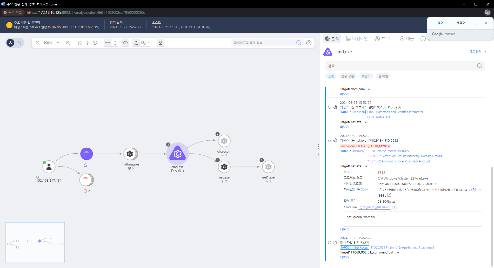

MITRE ATT&CK 액션을 기준으로 대응 방안을 작성
net 명령어를 통한 도메인 정보 확인하는 것을 탐지합니다.

비정상적인 net localgroup 명령어나 권한 그룹 조회 활동을 탐지하고, 실시간 로그 분석을 통해 의심스러운 명령 실행을 차단한다.
최소 권한 원칙 적용 (M1026 - Privileged Account Management)
Active Directory 감사 및 모니터링 (M1049 - Audit)
강력한 인증 적용 (M1032 - Multi-factor Authentication)
권한 그룹 구조 보호 (M1027 - Limit Access to Resource Over Network)
로그인 및 권한 상승 활동 분석 (M1018 - User Account Management)
도메인 그룹 변경 알림 설정 (M1031 - Network Intrusion Prevention)
Action 실행시 함꼐 영향을 받는 다른 Techniqes
| ATT&CK |
|---|
| T1069.001 |
| D3FEND |
|---|
| D3-DAM Domain Account Monitoring |
| D3-SCA System Call Analysis |
| D3-PM Platform Monitoring |